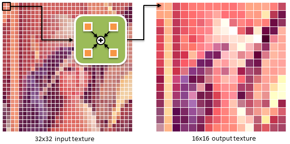

The objective of this tutorial is to demonstrate various optimization strategies for image processing algorithms on NVIDIA Tegra devices. Many computer graphics and vision methods are computationally demanding, but their computation and data access patterns are characterized by high data locality and relatively independent calculation. This, so called, data-parallel paradigm means that a typical image processing algorithm can be decomposed into a series of independent operations applied to a large array of elements (e.g., image pixels). We can significantly increase the speed of such calculations with Tegra’s powerful computation engines, namely multi-core ARM CPU with SIMD unit and a GPU. In this section, we will demonstrate on various examples how to use this hardware to speed up your image processing code.
Note
Throughout this tutorial you will see many source code fragments. All the code segments, except those in Implementation Note sections, should be copied to the test bed application. Implementation Notes contain short discussions of technical details, and their corresponding source already exists in the project source base.
This tutorial is by no means a complete introduction to parallel programming or general optimization techniques. Specifically, we assume that you are familiar with general C++ programming and basic graphics pipeline/OpenGL API. Below we include a list of resources that will be helpful in both understanding the contents of this tutorial and developing your own code on top of it.
The performance of the examples we cover here is evaluated inside a test-bed application. Before explaining how it works, let’s try to build and run it. Import it to Eclipse as an existing project. Open Eclipse, select File > Import > Android > Existing Android Code into Workspace, and browse into the Root Directory of the test app (/tutorials/ImageProcessingNeonMT). If you choose to copy the files into workspace, you may have to also copy the folder SharedCode under the tutorials folder into the workspace. Then hit Finish.
As this is a native project, select the C/C++ perspective.

By default all Android projects are Java projects, so let’s convert ours to native by right-clicking on the project in Package Explorer and selecting Android Tools > Add Native Support.
Then we have to select a name for the library storing the native code. Please use ImageProcessingNeonMT as the name.
Build the project (right-click ImageProcessingNeonMT > Build Project) and run it on device (right-click ImageProcessingNeonMT > Run As > Android Application). Every time we run the activity, the code reads two bitmap images from assets directory (checker_board.bmp and nvidia_logo.bmp), measures the execution speed of multiple image processing methods, prints out aggregated timing values to the Android log, and writes the output images to the SD card. Check out the log messages in LogCat by typing tag:tutorial in the log search line. Running the unmodified project file should print out:
D/tutorial( 5684): 1/10
D/tutorial( 5684): 2/10
D/tutorial( 5684): 3/10
D/tutorial( 5684): 4/10
D/tutorial( 5684): 5/10
D/tutorial( 5684): 6/10
D/tutorial( 5684): 7/10
D/tutorial( 5684): 8/10
D/tutorial( 5684): 9/10
D/tutorial( 5684): 10/10
D/tutorial( 5684): AddImage8(): 0.000ms
D/tutorial( 5684): AddImage8AlignedNEON(): 0.000ms
D/tutorial( 5684): AddImage8UnalignedNEON(): 0.000ms
D/tutorial( 5684): AddImage8MT(): 0.000ms
D/tutorial( 5684): AddImage8NEON_MT(): 0.000ms
D/tutorial( 5684): VBlurImage8(): 0.000ms
D/tutorial( 5684): VBlurImage8AlignedNEON(): 0.000ms
D/tutorial( 5684): VBlurImage8MT(): 0.000ms
D/tutorial( 5684): VBlurImage8NEON_MT(): 0.000ms
D/tutorial( 5684): VBlurImage8NEON_MT_TILED(): 0.000ms
At this stage the output files are black as the processing functions are empty stubs.
Implementation note
The test application is a simple function timing routine. The main timing loop in SimpleNativeAndroid.cpp is defined as follows:
Timer t;
std::vector<std::vector<double> > timings( 10 );
int const measurementCount = 10;
for( int i = 0; i < measurementCount; i++ )
{
// we pass 4 times bigger width because each pixel has 4 color channel (argb)
t.tic();
AddImage8( dest, sourcePtr1, sourcePtr2, w * 4, h );
timings[0].push_back( t.toc() );
t.tic();
AddImage8AlignedNEON( aDest, alignedSourcePtr1, alignedSourcePtr2, wAligned * 4, h );
timings[1].push_back( t.toc() );
t.tic();
AddImage8UnalignedNEON( dest, sourcePtr1, sourcePtr2, w * 4, h );
timings[2].push_back( t.toc() );
t.tic();
AddImage8MT( dest, sourcePtr1, sourcePtr2, w * 4, h );
timings[3].push_back( t.toc() );
t.tic();
AddImage8NEON_MT( dest, sourcePtr1, sourcePtr2, w * 4, h );
timings[4].push_back( t.toc() );
result.copyTo( aimage1 );
t.tic();
VBlurImage8( aDest, alignedSourcePtr1, wAligned * 4, h, wAligned * 4, 0, h );
timings[5].push_back( t.toc() );
t.tic();
VBlurImage8AlignedNEON( aDest, alignedSourcePtr1, wAligned * 4, h, wAligned * 4, 0, h );
timings[6].push_back( t.toc() );
t.tic();
VBlurImage8MT( aDest, alignedSourcePtr1, wAligned * 4, h );
timings[7].push_back( t.toc() );
t.tic();
VBlurImage8NEON_MT( aDest, alignedSourcePtr1, wAligned * 4, h );
timings[8].push_back( t.toc() );
t.tic();
VBlurImage8NEON_MT_TILED( aDest, alignedSourcePtr1, wAligned * 4, h );
timings[9].push_back( t.toc() );
LOG( "%i/%i", i + 1, measurementCount );
}
In order to improve the stability of timings (or reduce the impact of outliers to the estimated timing), we repeat the measurement 10 times for each method and use median as the final timing estimator.
const char *procNames[] =
{
"AddImage8", "AddImage8AlignedNEON", "AddImage8UnalignedNEON", "AddImage8MT", "AddImage8NEON_MT", "VBlurImage8",
"VBlurImage8AlignedNEON", "VBlurImage8MT", "VBlurImage8NEON_MT", "VBlurImage8NEON_MT_TILED"
};
for( int i = 0; i < timings.size(); i++ )
{
// display median of all measurements for each type of call
std::sort( timings[i].begin(), timings[i].end() );
LOG( "%s(): %.3fms", procNames[i], timings[i][timings[i].size() / 2] );
}
As you check the Android log, you notice that all the timings are very close to 0.0ms. That is because the bodies of these function are empty. We’ll show you how to fill those out over the course of this tutorial, and run the test application to compare the execution speeds of different code versions.
In the first example we consider a simple operation of adding two images together while saturating pixel sums at the maximum supported intensity. This is visualized in the figure below, where the right image is a sum of left (NVIDIA logo) and middle (checker-board pattern) images.
For the sake of simplicity let’s assume that each pixel is defined as an 8-bit intensity value, in which case the image sum operation can be described with the following code:
Copy the function below to ExampleAddImageNEON.h
void AddImage8( uint8_t *dst, uint8_t const *src1, uint8_t const *src2, int width, int height )
{
int index = 0;
// iterate over rows
for( int y = 0; y < height; y++ )
{
// iterate over pixels in a row
for( int x = 0; x < width; x++ )
{
// sum pixel values
int t = src1[index] + src2[index];
// clamp the sum if it is larger than 8-bit integer can represent
dst[index] = t > 255 ? 255 : t;
// move over to the next pixel
index++;
}
}
}
The above code can also be used for true color images, for which pixels contain multiple 8-bit color channels. In such a case, we simply assume the width of the input image corresponds to the width of the true color image multiplied by the number of color channels. For example, if the original width of 32-bit ARGB image is 1024, use 4096 instead.
NVIDIA Tegra 3 CPU contains four ARM Cortex-A9 cores. Each of these cores is equipped with a NEON SIMD (Single Instruction, Multiple Data) co-processor that allows exploiting data level parallelism in your algorithm. To demonstrate how SIMD works, let’s consider a simple example of adding together two sets of numbers:
a0 := b0 + c0;
a1 := b1 + c1;
a2 := b2 + c2;
a3 := b3 + c3;
For SIMD approach, all a, b and c elements would be stored in corresponding vector words, and the above code would map to a single instruction that operates on those vectors, i.e., a := b + c.
There are two ways of programming the NEON unit. The first one involves writing your routines as inline assembly (see this tutorial for details). It requires lots of manual labor, but also provides fine-grained control over the generated machine code. Another way, which we follow in this tutorial, is to use NEON intrinsics – C-style functions that operate on vector data types. Each intrinsic function has specific input and output type requirements and maps directly to a single machine instruction. An important feature of NEON intrinsics is the ability to map NEON vector registers to regular C variables. Combined with strong typing of vector data types, intrinsics make the programming safer and less prone to bugs. Because the programmer is relieved from manual register allocation and instruction scheduling, the source code is also easier to read and modify. The NEON vector registers are 128-bits long, and can be interpreted as many primitive data types. The most important ones are listed below:
int8x8_t int8x16_t
int16x4_t int16x8_t
int32x2_t int32x4_t
int64x1_t int64x2_t
uint8x8_t uint8x16_t
uint16x4_t uint16x8_t
uint32x2_t uint32x4_t
uint64x1_t uint64x2_t
float16x4_t float16x8_t
float32x2_t float32x4_t
Each of these types reads as <element_type><element_size>x<element_count>_t, where element_type corresponds to the basic type (int, uint, float) of each element in a vector, element_size denotes the size in bits of each element (8, 16, 32, 64-bits) and element_count tells us how many elements fit in a vector. For instance, uint8x16_t type holds sixteen 8-bit unsigned integers.
The NEON unit has an extensive instruction set that has been optimized for many multi-media related tasks. The functionality includes:
See ARM Architecture Manual Reference and ARM web-site for a detailed description of the instruction set. You can also look into arm_neon.h header, where intrinsic prototypes and vector data types are defined.
The AddImage8() function can be efficiently vectorized by assuming that a pack of 4 pixels (16 color channels or 16 unsigned 8-bit integers) maps to a single vector word. The code performing the addition with saturation of two images containing 16-bytes vectors data can be defined as:
Copy the function below to ExampleAddImageNEON.h
void AddImage8AlignedNEON( uint8_t *dst, uint8_t const *src1, uint8_t const *src2, int width, int height )
{
// compute the number of vector words that fit in each row
int const vectorNumberPerRow = width / 16;
// iterate over rows
for( int y = 0; y < height; y++ )
{
// iterate over *vectors* of pixels in a row
for( int i = 0; i < vectorNumberPerRow; i++ )
{
// load 16 pixels to vector a
uint8x16_t a = vld1q_u8( src1 );
// load 16 pixels to vector b
uint8x16_t b = vld1q_u8( src2 );
// perform 8-bit element-wise addition with saturation of vector data
uint8x16_t r = vqaddq_u8( a, b );
// store the resulting vector in the destination image
vst1q_u8( dst, r );
// shift the source and destination pointers by 16 pixels we have just processed
src1 += 16;
src2 += 16;
dst += 16;
}
}
}
Try compiling and running the application, and take a look at the log. You can see that the NEON version runs much faster than the basic version. You can also check that the output images look right; check the path from the log, and use command such as:
adb pull /storage/sdcard0/Android/data/com.nvidia.tutorial.imageproc/files/result0.bmp
result0.bmp contains the output of the basic version, and result1.bmp the output from the NEON version. Some of the functions that we add next will overwrite the same files with their outputs.
It is important to note that ARM NEON unit assumes the pointers to source and destination data (src1, src2, dst) are 16-bytes aligned. Reading from or writing to unaligned memory location will result in a fatal exception and application termination. In theory, ARM CPUs support unaligned memory accesses, however, such accesses are slower than their aligned counterparts. To get maximum performance benefits from SIMD approach, your image processing code should always use aligned memory accesses.
The above code assumes that image data is always aligned, i.e., each row starts at a location aligned to a 16-byte boundary. As the offset of the top-left pixel (zero) is always aligned to a vector boundary, this constraint means that the image width must be a multiple of 16 for the code work. In order to address this limitation and support all kinds of image sizes, we need to have two row processing functions: a vectorized version that has both input and output addresses aligned, and a scalar version that can be called for elements at arbitrary memory locations.
Knowing which function to call for which elements requires keeping track of current pixel offset alignment, which is often a difficult task. To simplify the accounting, let’s introduce a template method template<typename T> void RunVectorizedLoop<T>(). This method calls two member methods T::runScalarLoop() and T::runVectorLoop() to process vector and scalar elements, respectively.
Implementation note
RunVectorizedLoop() is a helper function (in Common.h) that executes image processing method from template parameter class over a specified range of elements, automatically accounting for unaligned memory accesses and lengths which are not multiples of vector size. The method is designed to work only for single index loops, i.e., both source and destination images use the same index to address their elements.
// return an integer with last n bits as 1, other bits are 0
FORCE_INLINE int LastBits( int n ) { return ( 1 << n ) - 1; }
// find the largest number aligned to b bits that is at most as large as n
FORCE_INLINE int AlignEnd( int n, int b ) { return n & ~LastBits( b ); }
// find how much to add to n to get to next number aligned to b bits
FORCE_INLINE int AlignStart( int n, int b ) { return ( ( 1 << b ) - n ) & LastBits( b ); }
/*
* a helper function that executes operator class over the specified range of elements
* and automatically takes care of unaligned memory and length values which are not
* multiple of vector size
*/
template<class T> FORCE_INLINE void RunVectorizedLoop( T const &processor, int loopStart, int loopEnd,
int baseOffset = 0 )
{
// start address alignment fix
int start0 = loopStart + AlignStart( baseOffset + loopStart, T::VECTOR_LOG2_LENGTH );
if( start0 > loopEnd )
{
start0 = loopEnd;
}
// run scalar computation for unaligned elements
processor.runScalarLoop( loopStart, start0, baseOffset );
// vector count fix
int end0 = start0 + AlignEnd( loopEnd - start0, T::VECTOR_LOG2_LENGTH );
// run vector computation for aligned elements
processor.runVectorLoop( start0, end0, baseOffset );
// run scalar computation for the remainder of elements
processor.runScalarLoop( end0, loopEnd, baseOffset );
}
With this helper template, we can modify the previous code to add support for arbitrary image sizes:
Copy the function below to ExampleAddImageNEON.h
void AddImage8UnalignedNEON( uint8_t *dst, uint8_t const *src1, uint8_t const *src2, int width, int height )
{
// instantiate a row processing class with source and destination pointers
AddImage8Processor processor( dst, src1, src2 );
// index of the 1st pixel in current row
int baseOffset = 0;
// iterate over rows
for( int y = 0; y < height; y++ )
{
// invoke a method that uses scalar and vector processing functions
// of the row processor class to compute pixel values in the current row
RunVectorizedLoop( processor, 0, width, baseOffset );
// shift the offset to the next row
baseOffset += width;
}
}
The instance of AddImage8Processor class stores pointers to source and destination images and comprises two loop processing functions called by RunVectorizedLoop():
Copy the function below to ExampleAddImageNEON.h (above AddImage8UnalignedNEON() function)
class AddImage8Processor
{
public:
// base 2 logarithm of the numbers of elements (pixels) in a vector
// trait needed by RunVectorizedLoop() template function
enum
{
VECTOR_LOG2_LENGTH = 4 // 16 pixels in a vector
};
// initialize source and destination pointers
AddImage8Processor( uint8_t *dst, uint8_t const *src1, uint8_t const *src2 )
: mDst( dst ), mSrc1( src1 ), mSrc2( src2 )
{
}
// scalar loop processor -> start and end indices can have arbitrary values
FORCE_INLINE void runScalarLoop( int start, int end, int baseOffset ) const
{
// compute local source/dest pointers
uint8_t const *src1 = mSrc1 + baseOffset;
uint8_t const *src2 = mSrc2 + baseOffset;
uint8_t *dst = mDst + baseOffset;
// iterate over columns of pixels
for( int i = start; i < end; i++ )
{
// sum pixel values
int t = src1[i] + src2[i];
// clamp the sum if it is larger than 8-bit integer can represent
dst[i] = t > 255 ? 255 : t;
}
}
// vector loop processor -> (start + baseOffset) and (end + baseOffset) indices
// must be a multiple of 2^VECTOR_LOG2_LENGTH (2^4=16 in this case)
FORCE_INLINE void runVectorLoop( int start, int end, int baseOffset ) const
{
// shift the range by base offset
start += baseOffset;
end += baseOffset;
// compute local source/dest pointers
uint8_t const *src1 = mSrc1 + start;
uint8_t const *src2 = mSrc2 + start;
uint8_t *dst = mDst + start;
// convert element count to vector count
// note: (end - start) is always a multiple of 16
end = start + ( end - start ) / 16;
for( int i = start; i < end; i++ )
{
// load 16 pixels to vector a
uint8x16_t a = vld1q_u8( src1 );
// load 16 pixels to vector b
uint8x16_t b = vld1q_u8( src2 );
// perform 8-bit element wise addition with saturation of vectors
uint8x16_t r = vqaddq_u8( a, b );
// store the resulting vector in the destination image
vst1q_u8( dst, r );
// shift the source and destination pointers by 16 pixels we have just processed
src1 += 16;
src2 += 16;
dst += 16;
}
}
private:
// pointer to destination image data
uint8_t *mDst;
// pointer to 1st source image data
uint8_t const *mSrc1;
// pointer to 2nd source image data
uint8_t const *mSrc2;
};
To improve the execution speed even further we can divide the work on a single output image across multiple CPU cores. The idea is to have each CPU core run its own worker thread that will call image processing routine on a subset of image rows. For example, for two threads, we can split the image into two equal parts, assign top part to the first thread, bottom part to the second thread, and process them independently. We use the POSIX Threads API for thread creation and management.
First, let’s define a structure holding the data shared between threads, such as pointers to source/destination images and their dimensions:
Copy the code below to ExampleAddImageMT.h
typedef struct
{
// image width and height
int width, height;
// pointer to destination image data
uint8_t *dst;
// pointer to 1st source image data
uint8_t const *src1;
// pointer to 2nd source image data
uint8_t const *src2;
} AddImage8Data;
After filling in the structure, we pass it to RunThreads() function that configures and launches thread processing for a specific image processing function. This is shown in the code below:
Copy the code below to ExampleAddImageMT.h
void AddImage8MT( uint8_t *dst, uint8_t const *src1, uint8_t const *src2, int width, int height )
{
AddImage8Data params;
// set up shared thread data (pointers to source and destination images and their size)
params.src1 = src1;
params.src2 = src2;
params.dst = dst;
params.width = width;
params.height = height;
// execute AddImage8ThreadProc() in parallel
// the thread count is set to zero (auto-detect) and the granularity
// of task is set to the number of image rows
RunThreads( AddImage8ThreadProc, ¶ms, height, 0 );
}
The last line of the above code runs AddImage8ThreadProc() function on a number of threads, and returns when they finish. The last argument of RunThreads() is the number of threads, 0 asks for the default number, which we have defined to be 2 in Common.cpp. We refer to AddImage8ThreadProc() as the thread body:
Copy the code below to ExampleAddImageMT.h (above AddImage8MT() function)
static void *AddImage8ThreadProc( void *ptr )
{
ThreadData<AddImage8Data> const *tdata = static_cast<ThreadData<AddImage8Data> const *>( ptr );
AddImage8Data const *params = tdata->params;
// compute start offset (tdata->taskStartIndex corresponds to image row number)
int index = tdata->taskStartIndex * params->width;
// invoke image processing on the image area assigned to the current thread
AddImage8( params->dst + index, params->src1 + index, params->src2 + index, params->width,
tdata->taskEndIndex - tdata->taskStartIndex );
return 0;
}
The argument that the thread body receives is a pointer to ThreadData that is filled in the RunThreads() utility (see the implementation note below) in Common.cpp. From that we know which part of the image should be processed by calling AddImage8().
Note that the amount of code required to support multi-threading is relatively small. The thread body function internally executes the standard single-threaded version of the image adding function (AddImage8()). The only difference is that each thread works only on a fragment of the output image. Run the program and verify the running times, you see that using 2 threads almost halves the running time compared to the single-thread version. You can’t directly control where the threads will execute, but if you start several threads with substantial workloads, they will be most likely assigned to separate CPU cores (Tegra 3 has 4 fast CPU cores). However, power saving policies may choose to make fewer than all four CPU cores available to your program. Try varying the number of threads between 2 and 5 and see how that affects the execution time.
Implementation note
RunThreads() function allows executing user-specified code in a number of threads that may run simultaneously. Each thread will have a number of tasks assigned. The concept of a task is abstract and does not correspond to any physical resource. We use it to describe the granularity of work being distributed across threads. The tasks are, by default, split equally between the threads, and their total number is specified by the user.
In case of our image processing examples, the task count corresponds to the number of rows in the image. Each thread will have a certain numbers of tasks (rows) assigned, and all together they will process the entire image.
// pointer to thread body
typedef void *(*THREAD_PROC)( void * );
// per thread information structure
template<typename T> struct ThreadData
{
// the range of tasks to be executed by a given thread
int taskStartIndex, taskEndIndex;
// thread index
int threadIndex;
// pointer to parameter structure passed in RunThreads() invocation
// it is read-only and shared between all threads
T const *params;
};
void RunThreads( THREAD_PROC proc, void *params, int taskCount, int threadNum )
{
if( threadNum <= 0 )
{
// if number of threads is less or equal zero, set it to default value
threadNum = DEFAULT_THREAD_COUNT;
}
// allocate space for per-thread data structure
std::unique_ptr<ThreadData<void> []> tdata( new ThreadData<void> [threadNum] );
// pthread thread ids array
std::unique_ptr<pthread_t[]> tid( new pthread_t[threadNum] );
// current thread task start index
int taskStartIndex = 0;
// the number of tasks per thread (rounded up)
int threadTaskRange = ( taskCount + threadNum - 1 ) / threadNum;
// split the tasks across the threads
for( int i = 0; i < threadNum; i++ )
{
// initialize data for each thread
tdata[i].threadIndex = i;
tdata[i].taskStartIndex = taskStartIndex;
tdata[i].taskEndIndex = taskStartIndex + threadTaskRange;
tdata[i].params = params;
// last thread end range might go out of borders if height is not a multiple of threadNum
if( tdata[i].taskEndIndex > taskCount )
{
tdata[i].taskEndIndex = taskCount;
}
taskStartIndex += threadTaskRange;
// spawn a thread
pthread_create( &tid[i], 0 /* use default attributes */, proc, &tdata[i] );
}
// wait for each thread to complete its work
for( int i = 0; i < threadNum; i++ )
{
pthread_join( tid[i], 0 /* ignore exit status */ );
}
}
What if we would like to combine the benefits of vectorized code with multi-threaded execution? It turns out that we can achieve this with minimal changes to the existing code. First, let’s define a new version of the image adding function:
Copy the code below to ExampleAddImageMT.h
void AddImage8NEON_MT( uint8_t *dst, uint8_t const *src1, uint8_t const *src2, int width, int height )
{
AddImage8Data params;
// set up shared thread data (pointers to source and destination images and their size)
params.src1 = src1;
params.src2 = src2;
params.dst = dst;
params.width = width;
params.height = height;
// execute AddImage8ThreadProcNEON() in parallel
// the thread count is set to zero (auto-detect) and the granularity
// of task is set to the number of image rows
RunThreads( AddImage8ThreadProcNEON, ¶ms, height, 0 );
}
Now, the only difference with respect to the previous code is that we pass a different thread body function to RunThreads():
Copy the code below to ExampleAddImageMT.h (above AddImage8NEON_MT() function)
static void *AddImage8ThreadProcNEON( void *ptr )
{
ThreadData<AddImage8Data> const *tdata = static_cast<ThreadData<AddImage8Data> const *>( ptr );
AddImage8Data const *params = tdata->params;
// compute start offset (tdata->taskStartIndex corresponds to image row number)
int index = tdata->taskStartIndex * params->width;
// invoke image processing on the image area assigned to the current thread
AddImage8UnalignedNEON( params->dst + index, params->src1 + index, params->src2 + index, params->width,
tdata->taskEndIndex - tdata->taskStartIndex );
return 0;
}
This function, similar to AddImage8ThreadProc(), calls a single-threaded image adding method to process part of the image assigned to the current thread. In this case, however, AddImage8UnalignedNEON() uses NEON extensions to accelerate processing across the columns.
Implementation note
The code presented here creates and destroys multiple threads every time we call the image processing function. This is a convinient approach, however, for very fast image processing functions the overhead of thread management is often larger than the speedup gained through parallelization. In such situations it is beneficial to manually manage threads with so called thread pools. You can read more about design and implementation of thread pools here.
In this example we demonstrate how to parallelize convolution operation. The following figure shows the effects of applying the operator (right) to the result of previous example (left). For better visibility of blur, we downsampled the input before filtering.
We start with a semi-optimized C++ version of a vertical blur function:
Copy the code below to ExampleVBlurImageNEON.h
void VBlurImage8( uint8_t *dst, uint8_t const *src, int const width, int const height, int const lineStride,
int const startY, const int endY )
{
// blur weights
uint16_t const weights[] = { 1, 3, 5, 3, 1 };
// weight sum
int const weightsSum = 13;
// kernel size
int const ksize = sizeof( weights ) / sizeof( weights[0] );
// weight sum fractional precision
int const weightsNormShift = 7;
// 1.0 represented as fixed point number
float const weightsNorm = (float) ( 1 << weightsNormShift );
// inverse of weight sum (fixed-point)
float const iwsum = weightsNorm / weightsSum;
// blur weights in fixed point precision
uint16_t const iweights[] =
{ (uint16_t) ( weights[0] * iwsum ), (uint16_t) ( weights[1] * iwsum ), (uint16_t) ( weights[2] * iwsum ),
(uint16_t) ( weights[3] * iwsum ), (uint16_t) ( weights[4] * iwsum ) };
// shift source and destination pointers to the start row
dst += startY * lineStride;
// loop over a range of rows
for( int y = startY; y < endY; y++ )
{
// we start integrating at current pixel y position minus half of the kernel size
int istart = y - ( ksize / 2 );
// we end integrating at current pixel y position plus half of the kernel size
int iend = y + ( ksize / 2 ) + 1;
// compute row start offset
int rowStartOffset = istart * lineStride;
if( istart >= 0 && iend < height )
{
// integration happens completely inside of the image (no clipping)
for( int x = 0; x < width; x++ )
{
// current pixel offset
int currentOffset = rowStartOffset + x;
// pixel accumulator
int accum = 0;
// accumulate weighted pixel values from neighboring rows
for( int i = 0; i < ksize; i++ )
{
accum += iweights[i] * src[currentOffset];
// shift to the next row
currentOffset += lineStride;
}
// write out the accumulator divided by the sum of weights
dst[x] = static_cast<uint8_t>( accum >> weightsNormShift );
}
}
else
{
// integration goes outside the image (clip)
int woffset = istart;
// clip if we go outside of the image
if( istart < 0 ) {
istart = 0;
rowStartOffset = 0;
}
if( iend > height ) { iend = height; }
// compute temporary *normalized* weights for this row
uint16_t tweights[ksize];
// weights sum needed for normalization
int wsum = weights[istart - woffset];
for( int i = istart + 1; i < iend; i++ )
{
wsum += weights[i - woffset];
}
// normalize weights
float wnorm = weightsNorm / wsum;
for( int i = istart; i < iend; i++ )
{
tweights[i - istart] = static_cast<uint16_t>( weights[i - woffset] * wnorm );
}
// process pixels in a row
for( int x = 0; x < width; x++ )
{
// current pixel offset
int currentOffset = rowStartOffset + x;
// pixel accumulator
int accum = 0;
// accumulate weighted pixel values from neighboring rows
for( int i = istart; i < iend; i++ )
{
accum += tweights[i - istart] * src[currentOffset];
// shift to the next row
currentOffset += lineStride;
}
// write out the accumulator divided by the sum of weights
dst[x] = static_cast<uint8_t>( accum >> weightsNormShift );
}
}
// shift to the next row of destination image
dst += lineStride;
}
}
When vectorizing more complex image processing functions (such as the one shown above), we recommend to transform your C++ code to a form that will be “almost” vectorized, i.e., selected lines of code can be directly replaced with NEON intrinsics. For example, in the above function, we represent weights in 16-bit fixed-point arithmetic, so that we can pack more pixel accumulators in a single NEON register. We simplify the computations in the inner-most loop a lot (single multiply-add operation) so most of the work is done by NEON unit.
Similar to the previous example, we can vectorize the code above simply by reinterpreting the data in the image and processing pixels in packs of four. For brevity and simplicity of this example, we limit the kernel to aligned data only (image width must be a multiple of 16).
We first put all the NEON code into macros that we can use in both the clipped and unclipped loop. We fetch 16 bytes at a time. We multiply them with weights using the same fixed-point arithmetics as above: as the weights sum up to one, the weighted sum of 8-bit inputs will fit into 16 bits. We need to use two vectors that each can store 8 16-bit accumulators to calculate the weighted sum. We shift the results back right, dropping the decimal part, and pack the lower-order 8-bit results into a single 16-wide vector, which we store to the destination image.
Copy the code below to ExampleVBlurImageNEON.h
#define INIT_16BIT_ACCUMULATORS( a1, a2 ) \
uint16x8_t a1 = vmovq_n_u16( 0 ); \
uint16x8_t a2 = vmovq_n_u16( 0 )
#define ACCUMULATE_16_8BIT_WEIGHTED( data, a1, a2, weight ) \
/* load 16x8-bit uint pixels to a vector */ \
uint8x16_t p_u8 = vld1q_u8( data ); \
/* extract the first 8 and the last 8 to separate vectors */ \
uint8x8_t lp_u8 = vget_low_u8( p_u8 ); \
uint8x8_t hp_u8 = vget_high_u8( p_u8 ); \
/* convert (expand) their format from 8x8-bit uint into 8x16-bit uint */ \
uint16x8_t lp_u16 = vmovl_u8( lp_u8 ); \
uint16x8_t hp_u16 = vmovl_u8( hp_u8 ); \
/* multiply by scalar weight and add to accumulators */ \
a1 = vmlaq_n_u16( a1, lp_u16, weight ); \
a2 = vmlaq_n_u16( a2, hp_u16, weight )
#define STORE_ACCUMULATORS_TO_16_8BIT( a1, a2, dst ) \
/* normalize the accumulators back to 8-bit range by shifting decimal point to right */ \
a1 = vshrq_n_u16( a1, weightsNormShift ); \
a2 = vshrq_n_u16( a2, weightsNormShift ); \
/* convert accumulators format from 8x16-bit uint into 8x8-bit uint, high-order bits not needed */ \
uint8x8_t laccum_u8 = vmovn_u16( a1 ); \
uint8x8_t haccum_u8 = vmovn_u16( a2 ); \
/* combine two 8x8-bit accumulators into one 16x8-bit accumulator */ \
uint8x16_t accum_u8 = vcombine_u8( laccum_u8, haccum_u8 ); \
/* store the resulting vector in the destination image */ \
vst1q_u8( dst, accum_u8 )
NO_INLINE
void VBlurImage8AlignedNEON( uint8_t *dst, uint8_t const *src, int const width, int const height, int const lineStride,
int const startY, int const endY )
{
// blur weights
uint16_t const weights[] = { 1, 3, 5, 3, 1 };
// weight sum
int const weightsSum = 13;
// kernel size
int const ksize = sizeof( weights ) / sizeof( weights[0] );
// weight sum fractional precision
int const weightsNormShift = 7;
// 1.0 represented as fixed point number
float const weightsNorm = (float) ( 1 << weightsNormShift );
// inverse of weight sum (fixed-point)
float const iwsum = weightsNorm / weightsSum;
// blur weights in fixed point precision
uint16_t const iweights[] =
{ (uint16_t) ( weights[0] * iwsum ), (uint16_t) ( weights[1] * iwsum ), (uint16_t) ( weights[2] * iwsum ),
(uint16_t) ( weights[3] * iwsum ), (uint16_t) ( weights[4] * iwsum ) };
// compute the number of vector words that fit in each row
int const vectorNumberPerRow = width / 16;
// shift source and destination pointers to the start row
src += startY * lineStride;
dst += startY * lineStride;
// loop over a range of rows
for( int y = startY; y < endY; y++ )
{
// we start integrating at current pixel y position minus half of the kernel size
int istart = y - ( ksize / 2 );
// we end integrating at current pixel y position plus half of the kernel size
int iend = y + ( ksize / 2 ) + 1;
if( istart >= 0 && iend < height )
{
// integration happens completely inside of the image (no clipping)
// this is a major case executed for most of the image rows
int rowStartOffset = -( ksize / 2 ) * lineStride;
// iterate over all vectors in a row
for( int x = 0; x < vectorNumberPerRow; x++, src += 16, dst += 16 )
{
// shift the source pointer to the top row
uint8_t const *sourceData = src + rowStartOffset;
// initialize two 8x16-bit accumulators so we can accumulate 16 pixels at a time
INIT_16BIT_ACCUMULATORS( laccum_u16, haccum_u16 );
for( int i = 0; i < ksize; i++, sourceData += lineStride )
{
ACCUMULATE_16_8BIT_WEIGHTED( sourceData, laccum_u16, haccum_u16, iweights[i] );
}
STORE_ACCUMULATORS_TO_16_8BIT( laccum_u16, haccum_u16, dst );
}
}
else
{
// integration goes outside the image (clip)
// this is minor case executed for top and bottom-most rows in the image
int woffset = istart;
// clip if we go outside of the image
if( istart < 0 ) { istart = 0; }
if( iend > height ) { iend = height; }
// compute temporary *normalized* weights for this row
uint16_t tweights[ksize];
// weights sum needed for normalization
int wsum = weights[istart - woffset];
for( int i = istart + 1; i < iend; i++ )
{
wsum += weights[i - woffset];
}
float wnorm = weightsNorm / wsum;
for( int i = istart; i < iend; i++ )
{
tweights[i - istart] = static_cast<uint16_t>( weights[i - woffset] * wnorm );
}
int rowStartOffset = ( istart - y ) * lineStride;
for( int x = 0; x < vectorNumberPerRow; x++, src += 16, dst += 16 )
{
uint8_t const *sourceData = src + rowStartOffset;
// initialize two 8x16-bit accumulators so we can accumulate 16 pixels at a time
INIT_16BIT_ACCUMULATORS( laccum_u16, haccum_u16 );
// iterate over all vectors in a row
for( int i = istart; i < iend; i++, sourceData += lineStride )
{
ACCUMULATE_16_8BIT_WEIGHTED( sourceData, laccum_u16, haccum_u16, tweights[i - istart] );
}
STORE_ACCUMULATORS_TO_16_8BIT( laccum_u16, haccum_u16, dst );
}
}
// correct data pointers by the difference between image width and row stride
src += lineStride - width;
dst += lineStride - width;
}
}
In order to parallelize the work across multiple CPUs, we follow the methodology from the previous example. First, let’s define a structure holding read-only data for each of the threads:
Copy the code below to ExampleVBlurImageMT.h
typedef struct
{
// source and destination image size
int width, height;
// pointer to destination image data
uint8_t *dst;
// pointer to source image data
uint8_t const *src;
} VBlurImage8Data;
Then, we specify the function that configures the extent of image processing work and launches threads:
Copy the code below to ExampleVBlurImageMT.h
void VBlurImage8MT( uint8_t *dst, uint8_t const *src, int width, int height )
{
// set up shared thread data (pointers to source and destination images and their size)
VBlurImage8Data params;
params.src = src;
params.dst = dst;
params.width = width;
params.height = height;
// execute VBlurImage8ThreadProc() in parallel
// the thread count is set to zero (auto-detect) and the granularity
// of task is set to the number of image rows
RunThreads( VBlurImage8ThreadProc, ¶ms, height, 0 );
}
Finally, let’s define the function executed by each thread:
Copy the code below to ExampleVBlurImageMT.h (above VBlurImage8MT() function)
static void *VBlurImage8ThreadProc( void *ptr )
{
ThreadData<VBlurImage8Data> const *tdata = static_cast<ThreadData<VBlurImage8Data> const *>( ptr );
VBlurImage8Data const *params = tdata->params;
// invoke image processing on the image area assigned to the current thread
VBlurImage8( params->dst, params->src, params->width, params->height, params->width, tdata->taskStartIndex,
tdata->taskEndIndex );
return 0;
}
Below we show how to extend the code for combined NEON and multi-threaded processing:
Copy the code below to ExampleVBlurImageMT.h
void VBlurImage8NEON_MT( uint8_t *dst, uint8_t const *src, int width, int height )
{
// set up shared thread data (pointers to source and destination images and their size)
VBlurImage8Data params;
params.src = src;
params.dst = dst;
params.width = width;
params.height = height;
// execute VBlurImage8ThreadProcNEON() in parallel
// the thread count is set to zero (auto-detect) and the granularity
// of task is set to the number of image rows
RunThreads( VBlurImage8ThreadProcNEON, ¶ms, height, 0 );
}
Similar to the previous example, we replace the thread body with a function that uses NEON for processing:
Copy the code below to ExampleVBlurImageMT.h (above VBlurImage8NEON_MT() function)
static void *VBlurImage8ThreadProcNEON( void *ptr )
{
ThreadData<VBlurImage8Data> const *tdata = static_cast<ThreadData<VBlurImage8Data> const *>( ptr );
VBlurImage8Data const *params = tdata->params;
// invoke image processing on the image area assigned to the current thread
VBlurImage8AlignedNEON( params->dst, params->src, params->width, params->height, params->width,
tdata->taskStartIndex, tdata->taskEndIndex );
return 0;
}
Tegra CPUs can process data very fast. In fact, they can process the data much faster than they can read it from the system memory! In order to reduce the amount of time the processor waits for the data (commonly referred to as access latency), Tegra CPUs include a hierarchy of cache memory: a small and fast subsystem that “buffers” memory operations between the CPU and the system memory. Cache memory is optimized towards data reuse: the data your code reads from the system memory stays in the cache hierarchy for future reads, until it is overwritten by newer chunks of data. Because most memory access patterns in the CPU code are of random, but local nature, the use of cache memory has a tremendous impact on the system performance.
To maximize the benefit from short cache access times, we have to make sure that our algorithm’s memory access patterns maximize the probability of cache hit (requested data found in cache), in other words, maximize the reuse of data stored in the cache.
From the two examples that we have presented, only the second one (image blurring) reads the same pixel data multiple times. At first glance, it looks like the method has good data locality – each output pixel is computed via weighted sum of its vertical neighbors. But what is local in image space is not necessarily local to the CPU. This is because the CPU has a linear view of the image data, so pixels in neighboring rows are located in different memory regions. The algorithm computes the output in a scan-line traversal order (left-to-right and top-to-bottom). This means that as soon as rows used for the convolution operator become larger than the cache capacity, processing the beginning of a new row will require refetching the data from the system memory and result in a significant reduction of the performance.
To mitigate the above issue, we can use cache blocking method, which basically is a modification of the computation/traversal order that maximizes cache-hit to cache-miss ratio. Let’s start by defining a new variation of blurring method:
Copy the code below to ExampleVBlurImageMT.h
void VBlurImage8NEON_MT_TILED( uint8_t *dst, uint8_t const *src, int width, int height )
{
// set up shared thread data (pointers to source and destination images and their size)
VBlurImage8Data params;
params.src = src;
params.dst = dst;
params.width = width;
params.height = height;
// execute VBlurImage8ThreadProcTiledNEON() in parallel
// the thread count is set to zero (auto-detect) and the granularity
// of task is set to the number of image rows
RunThreads( VBlurImage8ThreadProcTiledNEON, ¶ms, height, 0 );
}
Copy the code below to ExampleVBlurImageMT.h (above VBlurImage8NEON_MT_TILED() function)
static void *VBlurImage8ThreadProcTiledNEON( void *ptr )
{
ThreadData<VBlurImage8Data> const *tdata = reinterpret_cast<ThreadData<VBlurImage8Data> const *>( ptr );
VBlurImage8Data const *params = tdata->params;
// tile size set to 256x256 pixels
int const tileSize = 256;
// scan-line order for tile processing
// TODO: space filling curve might improve the performance
// row range
int const startY = tdata->taskStartIndex;
int const endY = tdata->taskEndIndex;
// image size
int const imageWidth = params->width;
int const imageHeight = params->height;
uint8_t const *src = params->src;
uint8_t *dst = params->dst;
// iterate over rows of tiles
for( int y = startY; y < endY; y += tileSize )
{
// clip end y coordinate of tiles in current row
// if it goes out of valid row range
int ey = y + tileSize;
ey = ey > endY ? endY : ey;
// iterate over a row of tiles
for( int x = 0; x < imageWidth; x += tileSize )
{
// clip tile end x coordinate if it goes out of image
int ex = x + tileSize;
ex = ex > imageWidth ? imageWidth : ex;
// execute NEON kernel for the current tile
VBlurImage8AlignedNEON( dst + x, src + x, ex - x, imageHeight, imageWidth, y, ey );
}
}
return 0;
}
The thread body function has been modifed to process the image as a matrix of fixed-size tiles. This way we make sure that, during the scan-line processing, all the rows necessary for computation of convolution are in the cache, and each new row inside of the tile will be fetched from the system memory only once.
Another method of hiding memory access latency is to pass a hint to the CPU memory controller about the location of the data you will need in the near future, e.g., several iterations ahead of the current one. Because the memory controller works independently from compute units, we can start prefetching the data into cache for the next iterations while calculating the result of current iteration. This effectively hides part of system memory access latency behind the computation time. GCC compiler has a built-in command that allows to pass a prefetch hint to the CPU memory controller: __builtin_prefetch(x), where x is a pointer to memory location we want to prefetch.
Copy the code below to the beginning of most inner loop (index i) of AddImage8AlignedNEON() and runVectorLoop() in ExampleAddImageNeon.h
// prefetch 64-bytes (2 cache lines on Tegra 3) ahead of current location in the source images
__builtin_prefetch(src1 + 64);
__builtin_prefetch(src2 + 64);
Copy the code below to the beginning of most inner loop (index i) of VBlurImage8AlignedNEON() in ExampleVBlurImageNeon.h
// prefetch 64-bytes (2 cache lines on Tegra 3) ahead of current location in the source image
__builtin_prefetch(sourceData + 64);
The choice of how far ahead we should read is a tricky one. It highly depends on the algorithm, its memory access patterns and even the type of CPU we optimize for (different architecture have different cache line sizes). We recommend you to experiment with various settings and measure the speed improvements. An arbitrary look ahead location can be passed as an argument, but in case of streaming processing, where input elements are processed sequentially, prefetching 32–128 bytes ahead produces best results. The address should also be aligned to the cache line size, which is a minimum transfer unit between CPU and system memory.
In this section we show the performance figures of the code covered in the tutorial. The examples have been compiled on GNU GCC 4.6 compiler (part of Android NDK r8b) with optimization flags set to -O2 -mfpu=neon. The timings were generated on NVIDIA Cardhu tablet running Android 4.1. The multi-threaded version of the code used two threads for parallel execution.
Running the test app on Cardhu produces the following timings for image sum operation:
AddImage8(): 91.866ms
AddImage8AlignedNEON(): 48.749ms
AddImage8UnalignedNEON(): 50.969ms
AddImage8MT(): 46.991ms
AddImage8NEON_MT(): 43.770ms
Speed-up ratios:
After augmenting the code with data prefetching the NEON code becomes significantly faster:
AddImage8(): 92.383ms
AddImage8AlignedNEON(): 34.843ms
AddImage8UnalignedNEON(): 43.002ms
AddImage8MT(): 48.473ms
AddImage8NEON_MT(): 32.402ms
Speed-up ratios:
The vertical blur operation from the second example takes:
VBlurImage8(): 394.113ms
VBlurImage8MT(): 199.049ms
VBlurImage8AlignedNEON(): 82.291ms
VBlurImage8NEON_MT(): 53.299ms
VBlurImage8NEON_MT_TILED(): 38.850ms
Speed-up ratios:
The vertical blur code benefits from prefetching even more. Note that manual data prefetching effectively canceled the benefits of cache blocking:
VBlurImage8(): 392.510ms
VBlurImage8MT(): 197.895ms
VBlurImage8AlignedNEON(): 65.176ms
VBlurImage8NEON_MT(): 33.295ms
VBlurImage8NEON_MT_TILED(): 35.479ms
Speed-up ratios:
While analyzing the above figures, you might notice that both algorithms behave differently when increasing parallelism through vectorization and multi-threaded execution.
Image adding function doubles the performance with two threads, but does not go much above that, although the NEON code processes 16-pixels in each iteration of the inner loop. This is because the algorithm is not bound by slow computation, but by slow system memory bandwidth. It is important to identify such situations in your software, so you can avoid over-optimizing the code and wasting computational resources. In case of image sum operation, the most optimal version in terms of power/performance ratio is the single-threaded NEON version.
The vertical blur method, on the other hand, shows good scaling with the increase of computational resources we throw at the problem. Only comparing the single-threaded+NEON with multi-threaded+NEON versions we notice the speed-up does not quite match the expectations, i.e., we get 7.4x instead of 9.6x. This is most likely the moment where we also hit the memory bandwidth wall. We can address the problem with cache blocking or manual prefetching, that allows us to get closer to the computational SOL (speed-of-light) for this algorithm.
Image comparison is one of the most common tasks performed in computer vision. The majority of methods addressing image registration, pattern matching, feature detection or camera pose estimation, include an evaluation step where one image is transformed and compared to the other using a specific distance metric (e.g., sum of absolute differences). The result of the comparison is a single number that tells us how similar the images are to each other. In this section we demonstrate how to map this example computer vision algorithm to programmable GPU hardware and how to use some of its fixed-functionality hardware to greatly improve the run-time performance.

You can find the source code of an example GPGPU application in /tutorials/ImageProcessingGLES. The import procedure is similar to previous examples. Open Eclipse, select File > Import > Android > Existing Android Code into Workspace, and browse into the Root Directory of the test app (/tutorials/ImageProcessingGLES). If you choose to copy the files into workspace, you may have to also copy the folder SharedCode under the tutorials folder into the workspace. Then hit Finish.
As this is a native project, select the C/C++ perspective.
By default all Android projects are Java projects, so let’s convert ours to native by right-clicking on the project in Package Explorer and selecting Android Tools > Add Native Support.
Then we have to select a name for the library storing the native code. Please use ImageProcessingGLES as the name. You might try to build the project (right-click ImageProcessingGLES > Build Project), however, the initial code base is incomplete. During the course of this tutorial you will fill in the missing parts and in the end will be able to successfully run the code on the device. If you would like to skip this step and work with the final application, import /tutorials/ImageProcessingGLES_Complete project directly.
The application source code is separated into several files:
We have implemented a simple state machine that controls the life-cycle of the application. You can find its implementation in ApplicationGPGPU::runStateMachine() method. Note the three distinct states: STATE_INIT (initial state used for resource loading and OpenGL ES 2.0 initialization), STATE_PROCESS (main rendering loop), and STATE_EXIT (stop state).
So far we have been focusing on CPU-based optimizations. If the achieved speed-up is still not enough for your application, the next step is to use another powerful accelerator inside the Tegra SoC — a programmable GPU (Graphics Processing Unit). There are many graphics-related applications for which GPUs produce an order of magnitude higher speed-ups than those presented above. In mobile world GPUs are normally used by Android OS to improve the user experience and graphics quality of the system UI. They are also widely employed in video games, where high pixel and geometry processing throughput is often required. However, since the GPU is basically a programmable compute unit, we can use it to accelerate the processing of many tasks traditionally handled by the CPU. This programming paradigm, commonly referred to as GPGPU (General-purpose computing on the GPU) is particularly beneficial to methods that involve moving image pixels around (projective transformations), filtering, or resampling the image data.
Implementation note
One of the most important features introduced in core OpenGL ES 2.0 API are Frame Buffer Objects (FBOs). They allow for efficient rendering to an off-screen surface, where the off-screen surface might be defined as a texture (render-to-texture) or a Render Buffer Object (RBO). Texture FBO targets (or attachments) are necessary when we plan to use the output of current rendering pass as an input to subsequent rendering passes, whereas RBOs are more suitable when we plan to read the contents of the FBO back (to host CPU space) or display it. Here is an example render-to-texture code:
int const outputWidth = 512;
int const outputHeight = 512;
// create destination texture
GLuint textureId;
glGenTextures( 1, &textureId );
// bind the texture
glBindTexture( GL_TEXTURE_2D, textureId );
// setup default filtering mode
glTexParameteri( GL_TEXTURE_2D, GL_TEXTURE_MIN_FILTER, GL_NEAREST );
glTexParameteri( GL_TEXTURE_2D, GL_TEXTURE_MAG_FILTER, GL_NEAREST );
glTexParameteri( GL_TEXTURE_2D, GL_TEXTURE_WRAP_S, GL_CLAMP_TO_EDGE );
glTexParameteri( GL_TEXTURE_2D, GL_TEXTURE_WRAP_T, GL_CLAMP_TO_EDGE );
// allocate memory
glTexImage2D( GL_TEXTURE_2D, 0, GL_RGBA, outputWidth, outputHeight, 0, GL_RGBA,
GL_UNSIGNED_BYTE, 0 );
// create FBO
GLuint fbo;
glGenFramebuffers( 1, &fbo );
// bind FBO as the current frame buffer
glBindFramebuffer( GL_FRAMEBUFFER, fbo );
// attach output texture to the framebuffer
glFramebufferTexture2D( GL_FRAMEBUFFER, GL_COLOR_ATTACHMENT0, GL_TEXTURE_2D, textureId, 0 );
// set the rendering viewport size to match FBO attachment size
glViewport( 0, 0, outputWidth, outputHeight );
// CALL YOUR RENDERING CODE HERE
// unbind FBO -> switching to regular "screen" rendering mode
glBindFramebuffer( GL_FRAMEBUFFER, 0 );
// destroy the FBO when not needed anymore
glDeleteFramebuffers( 1, &fbo );
The code using RBOs instead of textures (providing possibly a more efficient read-back to system memory) looks similar:
int const outputWidth = 512;
int const outputHeight = 512;
// create RBO
GLuint rbo;
glGenRenderbuffers( 1, &rbo );
// bind the RBO
glBindRenderbuffer( GL_RENDERBUFFER, rbo );
// allocate memory for output pixels
glRenderbufferStorage( GL_RENDERBUFFER, GL_RGBA8_OES, outputWidth, outputHeight );
// create FBO
GLuint fbo;
glGenFramebuffers( 1, &fbo );
// bind FBO as the current frame buffer
glBindFramebuffer( GL_FRAMEBUFFER, fbo );
// attach the RBO to the framebuffer
glFramebufferRenderbuffer( GL_FRAMEBUFFER, GL_COLOR_ATTACHMENT0, GL_RENDERBUFFER, rbo );
// set the rendering viewport size to match FBO attachement size
glViewport( 0, 0, outputWidth, outputHeight );
// CALL YOUR RENDERING CODE HERE
// read the results from the RBO
int *data = new int[outputWidth * outputHeight];
glReadPixels( 0, 0, outputWidth, outputHeight, GL_RGBA, GL_UNSIGNED_BYTE, data );
// unbind FBO -> switching to regular "screen" rendering mode
glBindFramebuffer( GL_FRAMEBUFFER, 0 );
// destroy framebuffer and renderbuffer when not needed anymore
glDeleteRenderbuffers( 1, &rbo );
glDeleteFramebuffers( 1, &fbo );
First, let’s define a basic image comparison algorithm:
Next, let’s try to address each of those points and implement their functionality in C++.
Given the homography matrix H:
we can define the 2D perspective transformation as:
where src is the input image and dst is the output image. This formulation is equivalent to OpenCV cv::warpPerspective() function and can be implemented on the GPU in a straightforward way. All you need to do is render two triangles (quad) over the entire area of the output image. This way we guarantee that every pixel’s value in the output image is generated by the currently attached fragment program. The pixel shader will simply evaluate the function for every pixel and write out its value to corresponding location in the output texture.
This approach is clean and an order of magnitude faster that the CPU code, but we can still accelerate it by using fixed-functionality hardware that enables perspective-corrected rasterization. First, let’s take a quick (and simplified) look at the geometry transformation stage in the OpenGL graphics pipeline (see section 2.11 of the OpenGL ES 2.0 specification). The key observation here is that the vertex output position V = (x, y, z, w), together with every varying attribute generated by a vertex shader, is projected to the clip-space via a perspective projection V' = (x/w, y/w, z/w, 1/w). These coordinates are then linearly interpolated in screen-space by the rasterizer (see section 3.5.1 of the OpenGL ES 2.0 specification), but right before they get accessible in a fragment program they are subject to division by the last component of vertex position (interpolated 1/w) again. This way the values available to the programmer in the pixel shader become “perspective corrected”. Since perspective correction is always on (therefore “free”), we can speed up our 2D warping code significantly by moving part of the computation to the vertex shader and rasterizer hardware. This can be achieved simply by reshuffling coefficients of the 2D homography matrix into a 4x4 OpenGL-compatible homography matrix:
The final vertex shader that renders a warped texture quad is defined as:
Copy the code below to assets/warped_diff.vert
// vertex position
attribute vec2 aPosition;
// vertex coordinate inside the texture
attribute vec2 aTexCoord;
// transformation matrix
uniform mat4 uTransformMatrix;
// per-pixel coordinate inside the texture
varying vec2 vTexCoord;
void main(void)
{
vTexCoord = aTexCoord;
gl_Position = uTransformMatrix * vec4( aPosition.x, aPosition.y, 0.0, 1.0 );
}
Since the perspective transformation has been done completely by the fixed-functionality hardware, the pixel shader is reduced into a single texture look-up, and we can skip all the warping computations here:
precision mediump float;
// handler to input texture
uniform sampler2D uWarpedTex;
// per pixel coordinate inside the texture (perspective transform corrected)
varying vec2 vTexCoord;
void main(void)
{
// look-up the input texture and write out the result
gl_FragColor = texture2D( uWarpedTex, vTexCoord );
}
The above fragment program will read the input image, warp it (point #1 from the algorithm overview) and write-out the result (point #2). Then, another render pass will read the warped image together with image B (point #3) and compute the difference between them. To minimize the amount of utilized memory bandwidth we can combine/fuse perspective warp with subtraction stage and create a single shader that will directly (and in a single draw pass) compute a difference image between warped A and B:
Copy the code below to assets/warped_diff.frag
precision mediump float;
// handler to the image B
uniform sampler2D uBaseTex;
// handler to the image A
uniform sampler2D uWarpedTex;
// normalization factor that converts window coordinates
// to texture coordinates (1/width, 1/height)
uniform vec2 uFragCoordNorm;
varying vec2 vTexCoord;
void main(void)
{
// fetch texels from both images and subtract
vec4 diff = texture2D( uBaseTex, gl_FragCoord.st * uFragCoordNorm ) - texture2D( uWarpedTex, vTexCoord );
// write out the absolute value
gl_FragColor = abs( diff );
}
As the above shader is not covering the entire output texture anymore (only the part resulting from warping the input image), we need to clear the destination difference image before the draw calls (i.e., glClear(GL_COLOR_BUFFER_BIT)).
A complete function that renders the difference image into a texture is defined as follows:
Copy the code below into the ApplicationGPGPU class definition (inside ApplicationGPGPU.h)
// compute difference image between an image and its perspective transformed copy
void generateDifferenceImage( Math::Matrix4x4f const &transformMatrix )
{
// bind the FBO
glBindFramebuffer( GL_FRAMEBUFFER, mFBO );
// attach output texture to the framebuffer
glFramebufferTexture2D( GL_FRAMEBUFFER, GL_COLOR_ATTACHMENT0, GL_TEXTURE_2D, mImageDiffTexture, 0 );
glViewport( 0, 0, mSourceImageWidth, mSourceImageHeight );
// clear the output texture
glClearColor( 0.0f, 0.0f, 0.0f, 0.0f );
glClear( GL_COLOR_BUFFER_BIT );
// activate warping fragment program
glUseProgram( mWarpedDiffProgram );
// setup uniforms
glActiveTexture( GL_TEXTURE0 );
glBindTexture( GL_TEXTURE_2D, mSourceImageTexture );
glActiveTexture( GL_TEXTURE1 );
glBindTexture( GL_TEXTURE_2D, mSourceImageTexture );
glUniform1i( glGetUniformLocation( mWarpedDiffProgram, "uBaseTex" ), 0 );
glUniform1i( glGetUniformLocation( mWarpedDiffProgram, "uWarpedTex" ), 1 );
// scale quad to span from -1 to 1 in normalized device coordinate space
Math::Matrix4x4f viewMatrix;
viewMatrix.setScale( 2.0f );
viewMatrix.applyTranslate( -1.0f );
viewMatrix *= transformMatrix;
// pass a normalizer for window coordinates (gl_FragCoord), we need to access reference
// unwarped image from warped image renderer
glUniform2f( glGetUniformLocation( mWarpedDiffProgram, "uFragCoordNorm" ), 1.0f / mSourceImageWidth,
1.0f / mSourceImageHeight );
glUniformMatrix4fv( glGetUniformLocation( mWarpedDiffProgram, "uTransformMatrix" ), 1, false,
viewMatrix.mData );
// render difference image into a texture
drawQuad( mWarpedDiffProgram );
}
The last line of the generateDifferenceImage() function calls a helper method drawQuad() that renders a textured quad with width and height equal to one:
Copy the code below into the ApplicationGPGPU class definition (inside ApplicationGPGPU.h)
void drawQuad( GLuint shader, float texCoordScale = 1.0f )
{
// 2D vertex position data
float const vertPositionData[] =
{ 1.0f, 1.0f, 0.0f, 1.0f, 1.0f, 0.0f, 0.0f, 0.0f };
// per vertex 2D coordinates inside the texture
float const textureCoordData[] =
{ texCoordScale, texCoordScale, 0.0f, texCoordScale, texCoordScale, 0.0f, 0.0f, 0.0f };
// drawing quad
int attribPosCoord = glGetAttribLocation( shader, "aPosition" );
int attribTexCoord = glGetAttribLocation( shader, "aTexCoord" );
glVertexAttribPointer( attribPosCoord, 2, GL_FLOAT, GL_FALSE, 0, vertPositionData );
glVertexAttribPointer( attribTexCoord, 2, GL_FLOAT, GL_FALSE, 0, textureCoordData );
glEnableVertexAttribArray( attribPosCoord );
glEnableVertexAttribArray( attribTexCoord );
glDrawArrays( GL_TRIANGLE_STRIP, 0, 4 );
glDisableVertexAttribArray( attribPosCoord );
glDisableVertexAttribArray( attribTexCoord );
}
After generating the difference image, we have to add up all the per-pixel differences to create a single number that will tell us how far apart the images are. On the CPU, such operation can be trivially implemented by iterating over the elements and adding their values to a single accumulator. Unfortunately, this linear complexity algorithm is sequential in nature and therefore does not map well to GPU hardware. In order to exploit its massive parallel processing capabilities we implement the sum operation with a pyramidal method that requires multiple render passes, but is fully parallelizable and also linear in nature.
Every pass of the parallel sum algorithm creates a texture that is half the size of the input texture and contains pixels that are sums of the local 2x2 pixel neighborhood from the input (see the above figure). These partial sum textures are further decimated in subsequent passes until the texture size of 1x1 is reached. The final texel contains the sum of all pixel values from the input.
The vertex/pixel shader pair that implements this algorithm is defined as:
Copy the code below to assets/accum4.vert
// vertex position
attribute vec2 aPosition;
// vertex coordinate inside the texture
attribute vec2 aTexCoord;
// transformation matrix
uniform mat4 uTransformMatrix;
// a distance of half a texel in normalized texture coordinates
uniform vec2 uHalfTexelSize;
// per-pixel coordinate of (0,0) and (1,0) neighbors inside the input texture
varying vec4 vTexCoord0;
// per-pixel coordinate of (0,1) and (1,1) neighbors inside the input texture
varying vec4 vTexCoord1;
void main(void)
{
// construct texture coordinates pointing the 2x2 texel neighborhood in input
// texture corresponding to every output texture pixel.
// Output texture has half the size of the input texture
vTexCoord0 = vec4( aTexCoord.x - uHalfTexelSize.x, aTexCoord.y - uHalfTexelSize.y,
aTexCoord.x + uHalfTexelSize.x, aTexCoord.y - uHalfTexelSize.y );
vTexCoord1 = vec4( aTexCoord.x - uHalfTexelSize.x, aTexCoord.y + uHalfTexelSize.y,
aTexCoord.x + uHalfTexelSize.x, aTexCoord.y + uHalfTexelSize.y );
gl_Position = uTransformMatrix * vec4(aPosition.x, aPosition.y, 0.0, 1.0);
}
Copy the code below to assets/accum4.frag
precision mediump float;
// input texture handler
uniform sampler2D uBaseTex;
// per-pixel coordinate of (0,0) and (1,0) neighbors inside the input texture
varying vec4 vTexCoord0;
// per-pixel coordinate of (0,1) and (1,1) neighbors inside the input texture
varying vec4 vTexCoord1;
void main(void)
{
// fetch 2x2 texels
vec4 p00 = texture2D( uBaseTex, vTexCoord0.st );
vec4 p10 = texture2D( uBaseTex, vTexCoord0.pq );
vec4 p01 = texture2D( uBaseTex, vTexCoord1.st );
vec4 p11 = texture2D( uBaseTex, vTexCoord1.pq );
// write out their scaled sum
gl_FragColor = ( p00 + p10 + p01 + p11 ) * 0.5;
}
Note that in the pixel shader we sum up four neighbors, but output only half of their actual sum. This is because the destination texture for the partial sum is stored in 8-bits per channel precision and values above 255 (normalized to 1.0) get clipped to 1.0. Scaling down the results before write-out reduces the saturation effects, but also slightly lowers the precision of the final sum. Now, time for the complete GPGPU image similarity measure function:
Copy the code below into the ApplicationGPGPU class definition (inside ApplicationGPGPU.h)
// down-scale and accumulate the difference image before downloading to system memory
float getImageSimilarityMeasure( Math::Matrix4x4f const &transformMatrix )
{
// generate difference image
generateDifferenceImage( transformMatrix );
// bind the FBO
glBindFramebuffer( GL_FRAMEBUFFER, mFBO );
// activate the accumulation fragment program
glUseProgram( mAccumProgram );
glViewport( 0, 0, mSourceImageWidth, mSourceImageHeight );
// setup uniforms
glUniform2f( glGetUniformLocation( mAccumProgram, "uHalfTexelSize" ), 0.5f / mSourceImageWidth,
0.5f / mSourceImageHeight );
glActiveTexture (GL_TEXTURE0);
glUniform1i( glGetUniformLocation( mAccumProgram, "uBaseTex" ), 0 );
GLuint srcTexture = mImageDiffTexture;
GLuint dstTexture = mTempTexture1;
int srcWidth = mSourceImageWidth;
int srcHeight = mSourceImageHeight;
float dstScale = 1.0f;
// ping-pong style accumulation
while( srcWidth > MAX_TEXTURE_SIZE && srcHeight > MAX_TEXTURE_SIZE )
{
// attach output texture to the framebuffer
glFramebufferTexture2D( GL_FRAMEBUFFER, GL_COLOR_ATTACHMENT0, GL_TEXTURE_2D, dstTexture, 0 );
// setup uniforms
glBindTexture( GL_TEXTURE_2D, srcTexture );
// set transformation matrix
Math::Matrix4x4f viewMatrix;
viewMatrix.setScale( dstScale );
viewMatrix.applyTranslate( -1.0f );
glUniformMatrix4fv( glGetUniformLocation( mAccumProgram, "uTransformMatrix" ), 1, false, viewMatrix.mData );
// render difference image into a texture
drawQuad( mAccumProgram, dstScale );
// swap source with destination textures
if( dstTexture == mTempTexture1 )
{
srcTexture = mTempTexture1;
dstTexture = mTempTexture2;
}
else
{
srcTexture = mTempTexture2;
dstTexture = mTempTexture1;
}
// next source texture will have dimensions of current destination
srcWidth /= 2;
srcHeight /= 2;
// scale down the next destination
dstScale *= 0.5f;
}
// output final pass to the RBO and read-back results
// attach RBO to the FBO for final output
glFramebufferRenderbuffer( GL_FRAMEBUFFER, GL_COLOR_ATTACHMENT0, GL_RENDERBUFFER, mRBO );
// last accumulation shader call
glBindTexture( GL_TEXTURE_2D, srcTexture );
// set transformation matrix
Math::Matrix4x4f viewMatrix;
viewMatrix.setScale( dstScale );
viewMatrix.applyTranslate( -1.0f );
glUniformMatrix4fv( glGetUniformLocation( mAccumProgram, "uTransformMatrix" ), 1, false, viewMatrix.mData );
// render difference image into a texture
drawQuad( mAccumProgram, dstScale );
// next source texture will have dimensions of current destination
srcWidth /= 2;
srcHeight /= 2;
// read the result back from the current texture attached to the framebuffer
Image<IPF_argb32> image( srcWidth, srcHeight );
glReadPixels( 0, 0, srcWidth, srcHeight, GL_RGBA, GL_UNSIGNED_BYTE, image.getRawPointer() );
// here we store the final accumulated difference between images
float diff = 0.0f;
// sum up pixel differences over RGB channels
int isize = srcWidth * srcHeight;
for( int i = 0; i < isize; i++ )
{
ImagePixelARGB32 pixel( image[i] );
diff += pixel[0];
diff += pixel[1];
diff += pixel[2];
}
// normalize by the number of accumulated samples
diff /= isize * 3;
// unbind FBO
glBindFramebuffer( GL_FRAMEBUFFER, 0 );
// restore the default viewport size
glViewport( 0, 0, mEgl->getWidth(), mEgl->getHeight() );
return diff;
}
Another important point to note is that we limit the number of render passes until the point we reach a partial sum texture of certain size (i.e., MAX_TEXTURE_SIZE is set to 32 pixels by default). The reason for that is twofold. First, the cost of issuing a draw call is constant and independent of the texture size. For very small textures, it is much faster to compute the final sum on the CPU rather than call the decimation shaders until we reach 1x1 partial texture size. Second, the final accumulated difference is more precise when computed on the CPU, since we can use floating point precision accumulator, as opposed to low bit-depth of the texture.
This step completes the compute part of the application. Now, to successfully run the project on your Tegra device, we still need a function that handles the initalization of all intermediate textures, shaders and FBOs:
Copy the code below into the ApplicationGPGPU class definition (inside ApplicationGPGPU.h)
static void RevertColorChannels( Image<IPF_argb32> &bitmap )
{
// converts BGRA to ARGB and back
// we need it to convert between OpenGL and Windows Bitmap pixel formats
int isize = bitmap.getWidth() * bitmap.getHeight();
for( int i = 0; i < isize; i++ )
{
ImagePixelARGB32 pixel( bitmap[i] );
bitmap[i] = ImagePixelARGB32( pixel[0], pixel[1], pixel[2], 255 );
}
}
bool loadResources( void )
{
// initialize the NVIDIA bitfonts
NvBool fontSplit = 1;
const char *fontFile = "utahcond+bold_1024.dds";
if( NVBFInitialize( 1, &fontFile, &fontSplit, 0 ) )
{
LOG( "could not initialize NvBitFont!" );
return false;
}
// allocate the text for the clock and set its properties
mClockText = NVBFTextAlloc();
NVBFTextSetFont( mClockText, 1 ); // should look up by font file name.
NVBFTextSetSize( mClockText, 32 );
NVBFTextCursorAlign( mClockText, NVBF_ALIGN_LEFT, NVBF_ALIGN_TOP );
NVBFTextCursorPos( mClockText, 10, 10 );
NVBFTextSetColor( mClockText, NV_PC_PREDEF_WHITE );
NVBFTextSetShadow( mClockText, 5, NV_PC_PREDEF_BLACK );
// load test image
glGenTextures( 1, &mSourceImageTexture );
glBindTexture( GL_TEXTURE_2D, mSourceImageTexture );
glTexParameteri( GL_TEXTURE_2D, GL_TEXTURE_MIN_FILTER, GL_LINEAR );
glTexParameteri( GL_TEXTURE_2D, GL_TEXTURE_MAG_FILTER, GL_LINEAR );
glTexParameteri( GL_TEXTURE_2D, GL_TEXTURE_WRAP_S, GL_CLAMP_TO_EDGE );
glTexParameteri( GL_TEXTURE_2D, GL_TEXTURE_WRAP_T, GL_CLAMP_TO_EDGE );
{
Image<IPF_argb32> bitmap;
bitmap.loadImage( "lena.bmp" );
// convert texture BGRA to RGBA OpenGL texture format
RevertColorChannels( bitmap );
mSourceImageWidth = bitmap.getWidth();
mSourceImageHeight = bitmap.getHeight();
LOG( "loaded %ix%i input image", mSourceImageWidth, mSourceImageHeight );
glTexImage2D( GL_TEXTURE_2D, 0, GL_RGBA, mSourceImageWidth, mSourceImageHeight, 0, GL_RGBA,
GL_UNSIGNED_BYTE, bitmap.getRawPointer() );
}
// setup output diff texture
glGenTextures( 1, &mImageDiffTexture );
glBindTexture( GL_TEXTURE_2D, mImageDiffTexture );
glTexParameteri( GL_TEXTURE_2D, GL_TEXTURE_MIN_FILTER, GL_NEAREST );
glTexParameteri( GL_TEXTURE_2D, GL_TEXTURE_MAG_FILTER, GL_NEAREST );
glTexParameteri( GL_TEXTURE_2D, GL_TEXTURE_WRAP_S, GL_CLAMP_TO_EDGE );
glTexParameteri( GL_TEXTURE_2D, GL_TEXTURE_WRAP_T, GL_CLAMP_TO_EDGE );
glTexImage2D( GL_TEXTURE_2D, 0, GL_RGBA, mSourceImageWidth, mSourceImageHeight, 0, GL_RGBA, GL_UNSIGNED_BYTE, 0 );
// setup temporary texture for accumulated difference image
glGenTextures( 1, &mTempTexture1 );
glBindTexture( GL_TEXTURE_2D, mTempTexture1 );
glTexParameteri( GL_TEXTURE_2D, GL_TEXTURE_MIN_FILTER, GL_NEAREST );
glTexParameteri( GL_TEXTURE_2D, GL_TEXTURE_MAG_FILTER, GL_NEAREST );
glTexParameteri( GL_TEXTURE_2D, GL_TEXTURE_WRAP_S, GL_CLAMP_TO_EDGE );
glTexParameteri( GL_TEXTURE_2D, GL_TEXTURE_WRAP_T, GL_CLAMP_TO_EDGE );
glTexImage2D( GL_TEXTURE_2D, 0, GL_RGBA, mSourceImageWidth, mSourceImageHeight, 0, GL_RGBA, GL_UNSIGNED_BYTE, 0 );
glGenTextures( 1, &mTempTexture2 );
glBindTexture( GL_TEXTURE_2D, mTempTexture2 );
glTexParameteri( GL_TEXTURE_2D, GL_TEXTURE_MIN_FILTER, GL_NEAREST );
glTexParameteri( GL_TEXTURE_2D, GL_TEXTURE_MAG_FILTER, GL_NEAREST );
glTexParameteri( GL_TEXTURE_2D, GL_TEXTURE_WRAP_S, GL_CLAMP_TO_EDGE );
glTexParameteri( GL_TEXTURE_2D, GL_TEXTURE_WRAP_T, GL_CLAMP_TO_EDGE );
glTexImage2D( GL_TEXTURE_2D, 0, GL_RGBA, mSourceImageWidth, mSourceImageHeight, 0, GL_RGBA, GL_UNSIGNED_BYTE, 0 );
// init shader loader
nv_shader_init( mNativeAppInstance->activity->assetManager );
// load image warping shader
mWarpedDiffProgram = nv_load_program( "warped_diff" );
// load difference accumulation shader
mAccumProgram = nv_load_program( "accum4" );
// load shader drawing textured quad
mPlainTextureProgram = nv_load_program( "plain_tex" );
// load shader drawing color filled quad
mPlainColorProgram = nv_load_program( "plain_col" );
// setup OpenGL
glDisable( GL_CULL_FACE );
glDisable( GL_BLEND );
// create FBO
glGenFramebuffers( 1, &mFBO );
// create and configure RBO
glGenRenderbuffers( 1, &mRBO );
glBindRenderbuffer( GL_RENDERBUFFER, mRBO );
glRenderbufferStorage( GL_RENDERBUFFER, GL_RGBA8_OES, mSourceImageWidth, mSourceImageHeight );
return true;
}
{kind=link}
{kind=link}
{kind=link}
{kind=link}
{kind=link}
{kind=link}
{kind=link}
{kind=link}
{kind=link}